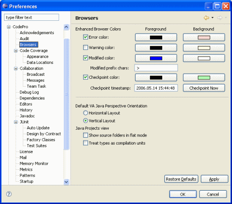

Preferences - Browsers

This page is used to control various CodePro enhanced browser options.
Enhanced Browser Colors
These options control the various colors that CodePro uses for COLOR highlighting of various elements. The default colors that are used may be changed via the various color buttons. Elements with errors or warnings may be highlighted to make them stand out better than the standard icon decorators that are used in the base system.
Color highlighting of modified elements allows the developer to quickly see what has changed since the prior version including any modified classes, packages and projects. The modification color is tied to the prefix character used by various SCM systems (including CVS) to mark modified elements. In the case of CVS, make sure that you enable CVS label decorators. As an alternative to SCM-marked modifications, timestamp-based modifications can also be highlighted. A checkpoint time may be set and then any file changed after that point will be highlighted. Times may be specified in absolute format (e.g., "10/10/04 1:30 PM") or relative format as an offset in hours from the current time (e.g., "-24"). Turn these options off to improve performance.
Default Packages View
This option controls whether the Packages View will be initially opened in flat or tree mode. This option is only available under Eclipse 2.0 and Application Developer 5.0.

Java Packages View in flat mode.

Java Packages View in tree mode.
Default Orientation
This option controls whether the VAJ Perspective will be initially opened in horizontal
or vertical orientation.
Note: The Packages view is not available under Eclipse 3.0.

VAJ Perspective View in horizontal mode.

VAJ Perspective View in vertical mode.
Show source folders
This option controls whether the Java Projects view shows the intermediate source folders or whether packages are immediately shown below the project level in the tree view.
Treat types as compilation units
This option controls whether the Java Projects view treats types as compilation units for selection purposes and context menus.